Lilian Cooper walk
This gently sloping walk shares some of the history and stories to be found along Dr. Lilian Cooper Drive.
Before you start the walk
Before you start the walk, wear comfortable shoes, use sun protection, carry water, and read the Brisbane City Council Cemeteries - Conditions of Entry.
Conditions of Entry
Brisbane City Council seeks your assistance to maintain a safe and peaceful environment for all visitors to enjoy visiting our City Cemeteries.
You can play your part by having consideration for other visitors in our grounds by:
- entering only between 6:00am and 6:00pm.
- not walking on, or across monuments or headstones and by not walking on or across lawn graves that may have subsided as these may be unstable.
- not leaning on, against or standing under, or on any monument structure.
- whilst every care is taken to remove trip hazards, some surfaces may be sloping or uneven. Care should be taken when working on grassed areas, particularly when wet and visitors should remain on pathways where possible.
- being aware of heavy machinery, mowers and other equipment being used.
- not placing glass bottles, vases or ceramic containers and statues on graves which may become damaged and dangerous.
- individual grave maintenance is the responsibility of the family of the deceased and must not be undertaken without a permit from Council.
Council accepts no responsibility for loss or damage to any vehicle, structure, monument, personal property, or thing, or any injury to any person no matter how any such injury, loss or damage may arise or be caused.
Map
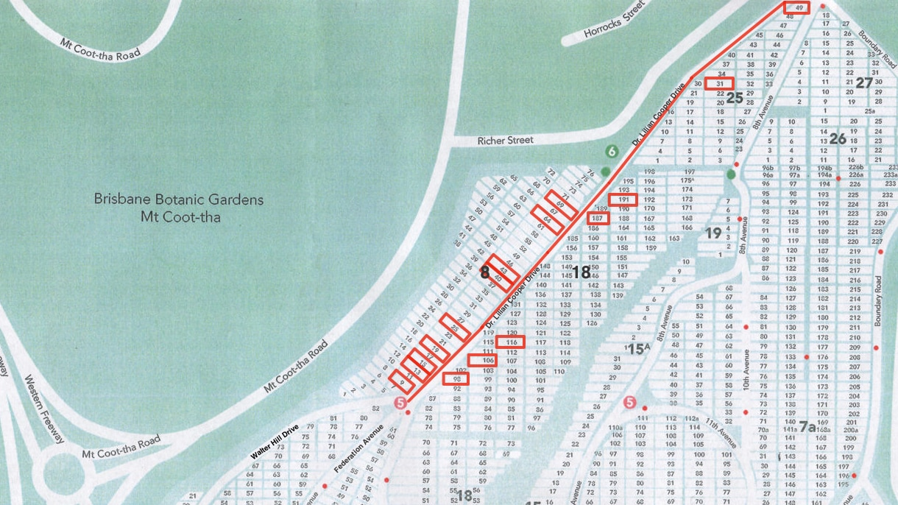
Directions
- If driving, park your car at the end of Federation Avenue.
- Begin the walk at Shelter Shed at the start of Federation Avenue.
- Opposite the Shelter Shed is the grave of Lachlan Chisholm Wilson.
Lachlan Chisholm Wilson (8‑9‑1/2)
Lachlan Chisholm Wilson was born on 11 July 1871 at Logan River, Queensland. With the exception of Victoria Cross recipient, Charles Heaphy (1820‑1881, buried at Portion 1‑5‑34) he is the most decorated soldier in Toowong Cemetery.
Educated at Brisbane Grammar School, Wilson began and ended his life as a lawyer, first admitted to the Queensland Bar in 1895. First practicing in Townsville, he later returned to Brisbane where he entered into a partnership with E. K. Tully to form one of Queensland's leading law firms. He later extended his business interests, becoming a director of the Australian Mutual Provident Society. During this time, he was also able to foster one of his personal interests, the welfare of ex‑servicemen and women, and cofounded Legacy.
Aside from his work as a lawyer, Wilson also served his country, joining the Australian Imperial Force as a Major on 30 September 1914 and landing at Gallipoli in May. As the new commander, he mounted a successful raid against Bird Trenches near Gaba Tepe and seized positions now known as Wilson's Lookout. Taking part in almost all the major engagements between the Battle of Romani (3‑5 August 1916) and the capture of Damascus (October 1918), Wilson was also instrumental in introducing the Queensland spear‑point pump to obtain water in the desert. This portable device could raise water quickly and when combined with canvas troughs, simplified the watering of the horses.
Wilson continued his military service through Jordan and Egypt and notably managed a rebellion which broke out against the British. For his management of this conflict, Wilson was awarded the Distinguished Service Order and the French Croix de Guerre. After a brief period on the unattached list, Australian Military Forces, Wilson became aide‑de‑camp to the Governor‑General in 1923‑1927 and commander of a number of other infantry and cavalry brigades.
Wilson died at his New Farm home on 7 April 1947, survived by his wife, son and daughter.
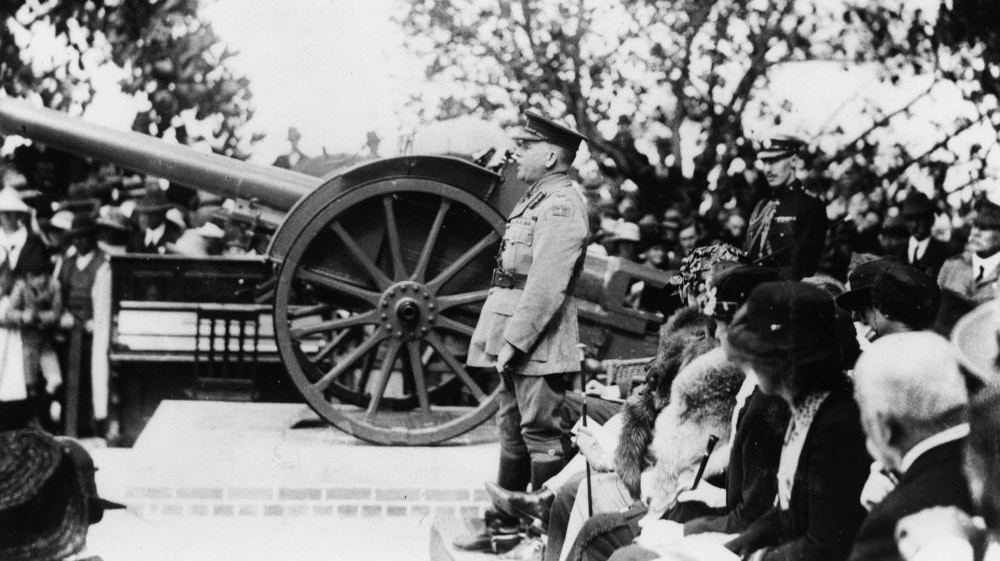
Brigadier-General Lachlan Chisholm Wilson presenting a field gun at Brisbane Grammar School Queensland 1921 - State Library of Queensland. Cropped.
Directions
- Return to the road and move along two rows.
- Close to the edge of the road is the grave of George Henderson.
George Henderson (8‑13‑26)
Through his contact with relatives of the famed Doctor Livingstone, George Henderson developed an interest in Africa. After meeting with the Rebel Chief Cetewayo Zulu, he managed to influence railway construction there. Returning to the United Kingdom, then moving to Queensland, Henderson became heavily involved in Brisbane’s development. Initially he worked to develop and construct storm water drainage in South Brisbane and Kangaroo Point, was responsible for ploughing and paving with wooden blocks both George and Queen streets, and contributed to the construction of railway lines between Cleveland, Charleville, Cloncurry, Chillagoe, parts of the north coastline, and Eagle Farm Meatworks.
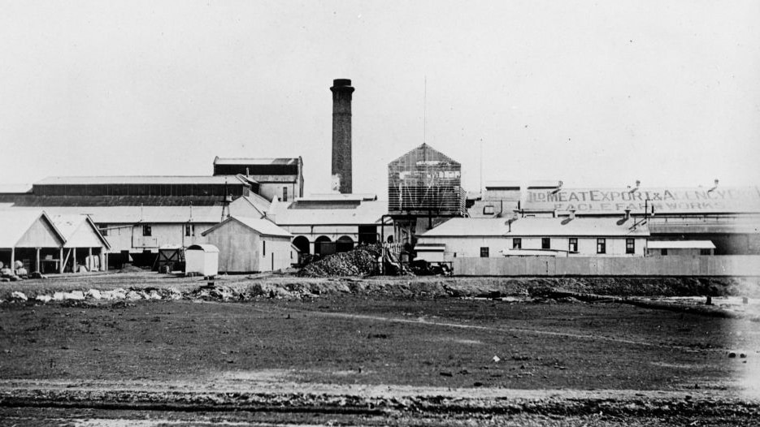
Queensland Meat Export and Agency Company at Eagle Farm, Brisbane, ca. 1900 - State Library of Queensland.
Directions
Moving further along the road and off to the right is the black granite monument of the McWhirter family.
James McWhirter (18‑98‑3/7)
James McWhirter (junior), the only son of James and Agnes McWhirter (née Cameron), played a significant part in developing the centre of Fortitude Valley, working with his father to build a premier shopping precinct, which is now a Queensland heritage‑listed place.
James McWhirter (junior) was born in 1878 in Scotland. His father and mother immigrated to Australia that same year. He married Adelaide Mary Reid in January 1906, but she died tragically nine months later, giving birth to their son Duncan. He remarried in 1910 to Mary Millicent Atkins and had several children with her.
Encouraged by the new styles of shopping in London, the McWhirters commissioned Brisbane architects Atkinson and McLay to design a substantial, five‑storey building. When completed in 1912 it became an immediate Fortitude Valley landmark, seen for miles around, and dominating the Valley corner. No expense had been spared and on its opening in October 1912, delivered the most modern and progressive of department stores. On the ground level, extensive street frontages displayed the latest in island windows and the five street entrances displayed mosaic tiling and lead lights in the main foyer. The interior was well‑ventilated and well‑lit and completed with fittings of silky oak display tables which allowed customers to browse and inspect goods without being dependent on sales assistants.
McWhirters was also one of the first department stores fitted with sprinkler systems for fire prevention and three electric elevators for the convenience of customers. The pneumatic cash tube system was also the largest in the state. The grand new store housed more than 50 departments, including manchester, fabric, haberdashery, jewellery, travel goods, and of course millinery and women's clothing as well as furniture, carpets, kitchenware and toys. For the convenience of customers, a tea room also overlooked the Brisbane River and suburbs.
James McWhirter (junior) died in Sydney in September 1919 of pneumonia. Such was McWhirter’s popularity and standing in Brisbane’s social elite that his funeral was held in Brisbane on 19 September 1919 at the Ann Street Presbyterian Church, with many would‑be attendees unable to be admitted into the church due to lack of space. He was survived by his father, James McWhirter Senior, his widow and children.
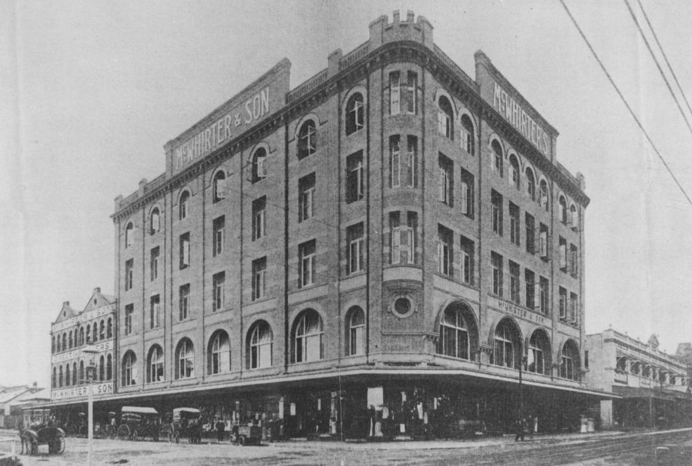
McWhirter's department store in Fortitude Valley, 1913 - State Library of Queensland.
Directions
Immediately to the other side of the road is the monument of Charles Foggitt.
Charles Foggitt (8‑15‑13/14)
Charles Emanuel Foggitt, born in Yorkshire in 1864, was a director of the firm Foggitt Jones and Company Limited (Foggitt Jones Limited from 1921). Foggitt immigrated to Australia in 1886 at the age of 22, establishing himself in Brisbane. He married Sarah Ann Malins in 1889, and for many years was associated with food manufacturing firm, J. C. Hutton Propriety Limited, based in Zillmere and Oxley.
Foggitt possessed exceptional business intelligence. In 1904 Foggitt left J. C. Hutton Propriety Limited and founded Foggitt, Jones and Company Limited with Thomas Llewellyn Jones in 1905, producing ham, bacon and smallgoods. They took over the Hutton’s factory in Oxley, which was in financial distress, and within five years the company was generating an annual turnover of £1,000,000. The company gradually expanded into other states and their storage shed at 1 Boundary Street, South Brisbane, built circa 1917 in response to this growth, is now a local heritage place. Foggitt Jones Limited continued to grow throughout the early 20th Century and provisioned supplies to Australian troops during WWII.
Foggitt lived with his family at Tarrangower, Chatsworth Road, Greenslopes. He died on 13 July 1926 after a short illness and was survived by his wife Sarah, three sons and a daughter.
Directions
Almost immediately in line with this grave, but three rows further along, is the grave of George Harrap.
George Harrap (8‑19‑8A)
George Harrap was born in Yorkshire, England in 1843 and trained as a teacher at the famous St Mark’s College, Chelsea, London. He taught in England from 1857‑1872, when he immigrated to Queensland under an engagement with the Queensland Education Department. He was appointed head teacher at the Bulimba State School for a year before being transferred first to North Ipswich and then Woolloongabba in 1884. He was appointed Inspector of Schools in January 1887 and served in this capacity throughout most of Queensland. He retired in 1914, and was recognised as pioneering education in Queensland’s far north.
Harrap married Elizabeth Brown in Lincolnshire, England in 1867 and had seven children. His son George was born on board the ship Royal Dane enroute to Australia.
Harrap died in January 1934 at the age of 91 at his daughter’s residence in Ascog Terrace, Toowong. He was well known for his love of sports and was described in his obituary as a “man of striking physique” who “retained his physique and stamina until a few months before his death”.
Directions
Moving back across the road and approximately four graves in, is the headstone of William Neil Gillies.

William Neil Gillies (18‑106‑20)
1868‑1928
William Neil Gillies spent his early years with his parents, sugar farming in New South Wales. After marrying his wife Margaret and the birth of their two children in the early 1900s, he moved to Queensland where he farmed sugar, timber and dairy.
Later however, he began his move into political life as a member of the Labor party. Initially, as a member of the Tintenbar Shire Council, he was unsuccessful in vying for the state and federal seats of Richmond. Somewhat controversially however, he later won the new Queensland Legislative Assembly seat of Eacham created in 1912, after having been charged with falsely stating his period of residence on an electoral claim.
Here began Gillies’ rapid rise within the party. He was elected to Cabinet on 25 April 1918 after the general election and then gained the important post of Secretary for Agriculture and Stock and later, minister for the portfolio. Then in February 1925 when E.G. Theodore resigned as premier, Gillies narrowly defeated William McCormack to begin a short and turbulent premiership involving clashes with and between the unions.
Upon his resignation, Gillies accepted a position in the Industrial Court which was later replaced by the Board of Trade and Arbitration. Here, in a position much better suited to his role as an administrator, he was regarded as a fair Commissioner by employers until his sudden death on 9 February 1928 in Brisbane of hypertensive heart disease.
For those travelling between Cairns and Atherton, you may find yourself travelling the Gillies Highway, named after William Gillies, noted for its 263 corners and 800 metre elevation.

William Gillies, 1920 - Queensland State Archives
{kind=link}
Directions
Heading back to the road and moving further along approximately four rows, turn left down the path to see the white and blue painted monuments of William Forgan Smith.

William Forgan Smith 8‑25‑20/21
1887‑1953
William Forgan Smith was born on 15 February 1887 and came from humble beginnings as the child of Mary Forgan and George Smith, the head gardener of a Scottish family at Airlie Castle Estate. He was a painting and decorating apprentice in Glasgow and helped paint the interior of the Municipal Chambers, where later he was granted the Freedom of the City.
In 1911, William moved to Mackay in Queensland under medical advice that a warmer climate would assist his chronic bronchial condition and where he met his wife Euphemia (Effie) Margaret Wilson. From this time, between 1913‑1942, until his resignation, he led a great career in Australian public life breaking all state parliamentary records at the time. He held office for a longer period than any other Labor Premier in Australia and was the only Queensland political leader to win the people's confidence at four successive elections, leading the Queensland Labor Party for 13 years. His record term at the head of the Queensland Government was one day short of 10 years and three months, from 17 June 1932 to 16 September 1942.
After his time as Premier he took over the chairmanship of the Central Sugar Cane Prices Board, and later also chairmanship of the Sugar Board. Despite strained relations with the University of Queensland over funding and development, he was also granted an honorary Doctorate of Laws in 1935 and later appointed Chancellor in 1944, a position he retained until his death in 1953. The main arts building at the St Lucia campus is named in his honour.
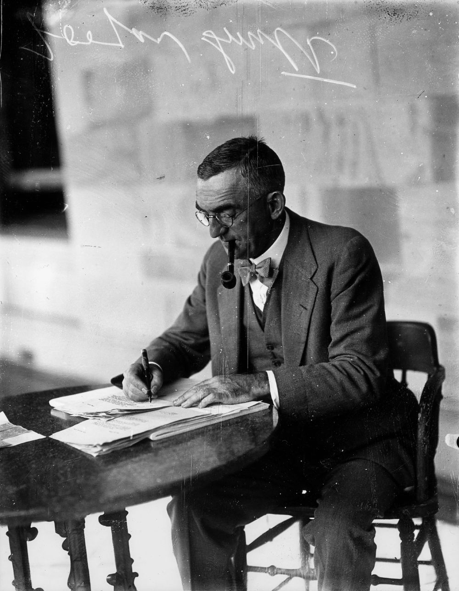
Construction of the Forgan Smith Building, University of Queensland , St Lucia, Brisbane, Queensland, 1940 - State Library of Queensland
William Forgan Smith ca. 1935 - State Library of Queensland
Directions
Returning to the road, move immediately across to the right and locate the row beginning with the grave of Economidis. Moving along this row see an older grave commemorating Sir Manuel Hornibrook and his son. Look carefully, from the side this monument reads MACDIARMID.
Sir Manuel Richard Hornibrook (18‑116‑18)
1893‑1970
Sir Manuel Richard Hornibrook is perhaps best known in Brisbane for his association with bridge building. His first bridge of note was constructed for the Department of Main Roads across the Burrum River in 1925. This is recorded as the earliest, publicly‑funded, reinforced‑concrete bridge in Queensland. In an effort to create employment and provide support for families during the depression, the Hornibrook Highway was constructed during the 1930s and included what was Australia's longest bridge at the time of its construction. The Hornibrook Group built more than 100 bridges, some of the better‑known including the William Jolly, Story and New Victoria bridges in Brisbane, the Northbridge and Iron Cove Bridge in Sydney, and the Kings Avenue and Commonwealth Avenue bridges in Canberra.
Along with bridges, Manuel Hornibrook and his brothers, constructed drainage and sewerage works around Brisbane, Longreach, Roma and other towns in western Queensland. In fact, over a period of 40 years their companies built wool stores, wheat silos, wharves, sugar‑sheds, tank farms, water mains, factories and electricity power‑stations. Of course another highlight was the successful completion in the 1960s of the superstructure of the Sydney Opera House, including the sail‑like roof.
Personally, Manuel Hornibrook was known for his spirit, courage and determination and his genuine interest and concern for people, as evidenced by his work during the Great Depression. He was also president of the Hamilton Bowls club, a Rotarian and worked tirelessly for International House, at the University of Queensland. Married with three children, Hornibrook died on 30 May 1970 at the Holy Spirit Private Hospital, Wickham Terrace, Brisbane and was cremated.
Directions
Returning to the road and moving ahead approximately 20 meters, immediately to the left of the road are the graves of Alois Wilhelm Leitner and Robert William Black.
Alois Wilhelm Leitner (8‑40‑16A)
Alois Wilhelm "Bill" Leitner was born in 1878 in the town of Lichtenstadt in Bohemia, now known as part of the Czech Republic. Leitner attained the degree of Master Brewer in 1902, emigrated to Australia and spent the next 18 years working in breweries across Victoria, New South Wales and South Australia.
In 1910, the Castlemaine XXXX Brewery famously set out to develop a beer they believed would be better suited to the Queensland climate than those currently being sold which were modelled on the Victorian styles of the late 1880s. The XXXX Sparkling Ale, while receiving an enthusiastic reception by the Queensland public, was plagued with production problems. And so it was that Leitner was recruited to Castlemaine XXXX in 1920. Almost immediately he introduced new strains of yeast from Europe, ultimately resulting in the final release of XXXX Bitter Ale in 1924 to great acclaim and which remains today.
At the same time, XXXX introduced "Mr Fourex". The symbol, still recognised today, was that of a sharply dressed, yellow boater hat‑wearing gentleman.
Leitner remained with Castlemaine as their Head Brewer throughout the 1920s continuing to improve all aspects of production. Despite his sudden death in 1931, his creation still remains one of the best known brands in Queensland. Leitner was survived by his wife Alma, their three daughters and a son.
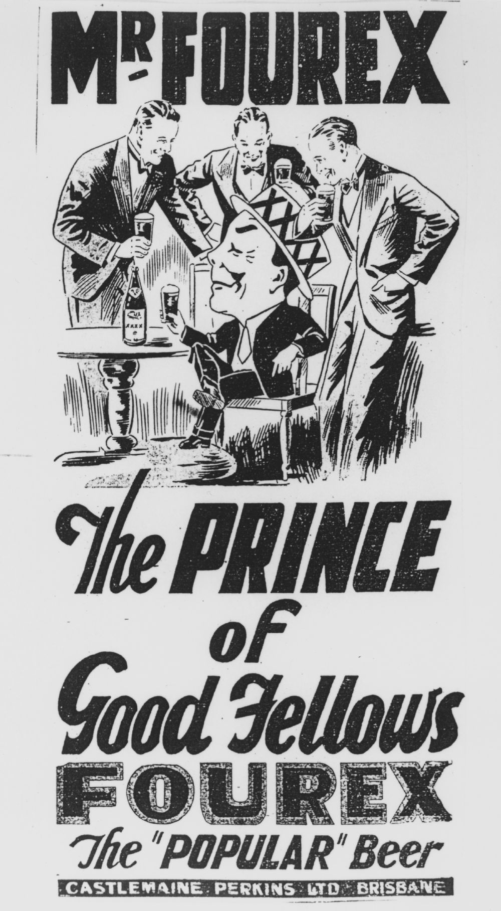 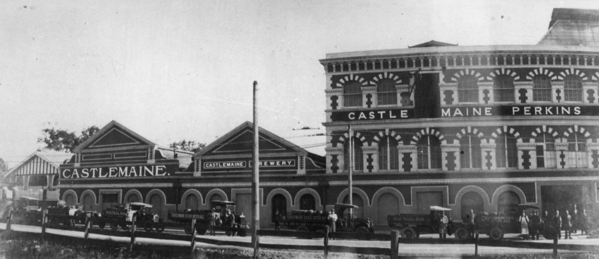
Fourex beer advertisement by Castlemaine Perkins Ltd., 1920 - State Library of Queensland.
Staff and vehicles of Castlemaine Perkins Limited outside the brewery in Milton Road, Brisbane, ca. 1929 - State Library of Queensland.
William Robert Black (8‑43‑33/34)
Born in Northern Ireland in 1859, William Robert Black reportedly arrived in Australia as a refugee as a result of potato famine. Moving to Brisbane, he made his living delivering coal to houses by handcart and later, horse and cart. Black continued to expand his work until he owned a fleet of six launches and 20 lighter, delivering coal using the Brisbane and Bremer River systems. During this time and as a result of his success, he also purchased 700 acres of coal deposits at Bundamba in Ipswich, where he established the Blackheath Colliery, complete with electric haulage and advanced machinery where he broke all state records in the cutting and haulage of coal. Other collieries soon followed at Walloon and another in the centre of Ipswich.
After his retirement 1920, Black sought to share his wealth, contributing through a number of philanthropic ventures including the establishment of Fairholme College in Toowoomba, Scots College in Warwick, Brisbane Boys’ College Council, Somerville House Council, and founding Emmanuel College at the University of Queensland, St Lucia. As a particularly religious man, he saw his contribution to these religious schools as ensuring the link between religion and education. This continued until his death in 1930 when his estate was left in trust for the Presbyterian Church in Queensland. William Black never married.
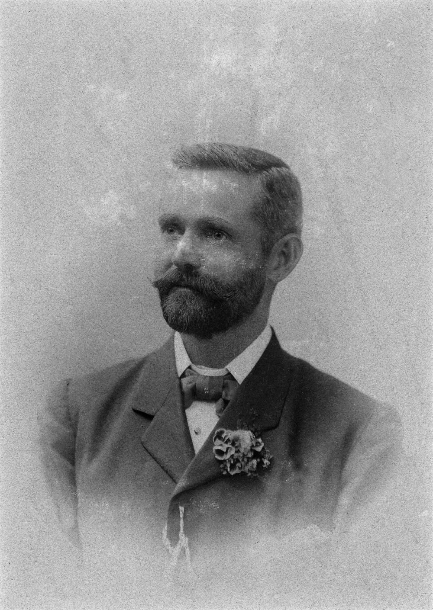 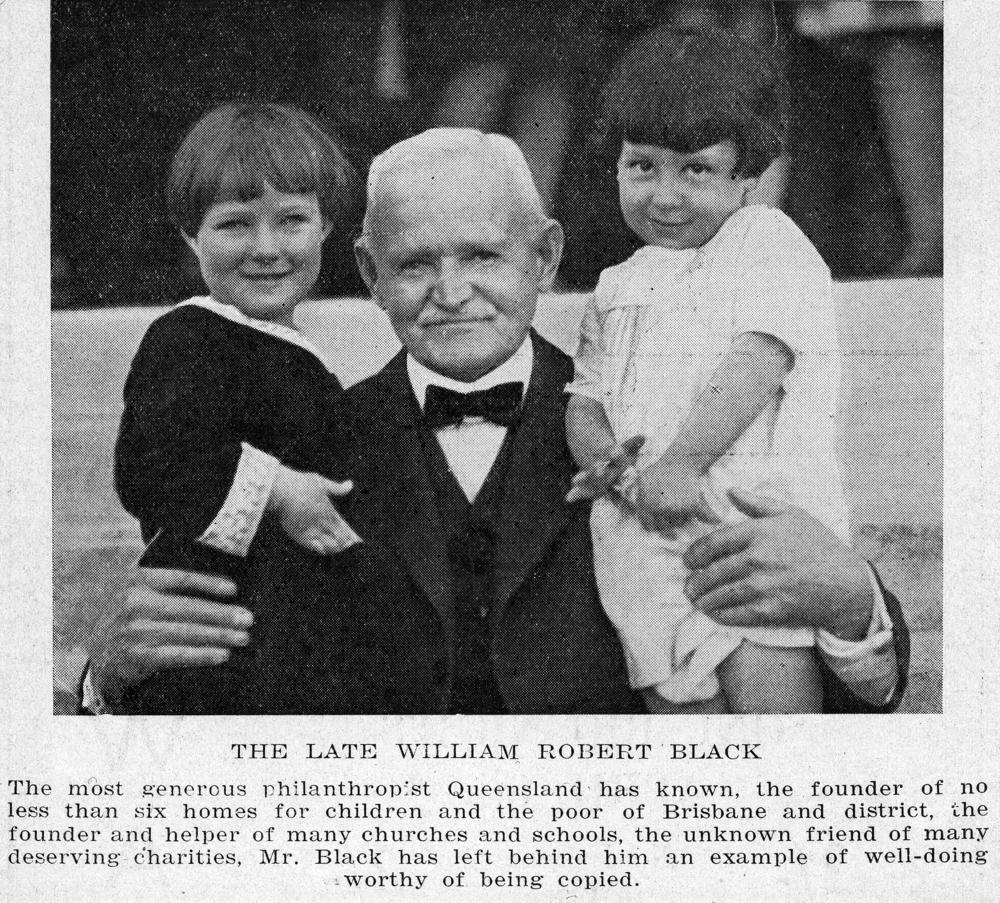
William Robert Black, ca. 1898 - State Library of Queensland.
William Robert Black, ca. 1931 - State Library of Queensland.
Directions
Enter the Orthodox section of the cemetery, signified by the many Orthodox crosses. Almost at the end of this section, turn left down the row and walk down the hill under the trees to find the white headstone of Ataman Tolstoff.
Ataman Vladimir Tolstoff (8‑64‑8)
Members of the Russian community had often looked to Australia as a place of safety during times of economic and political revolution. The revolution in 1917, however brought cause for concern when it was thought more radical refugees were arriving. This caused the Australian Government to declare an embargo on Russian emigrants from 1917‑1922. When this embargo was lifted in 1922 it gave rise to one of the largest influxes of Russians into Queensland, their population increasing to approximately 3000 by the late 1930s.
One of them was Ataman (General) Vladimir Tolstoff, Commander of the 4th Ural Cossacks during the revolution. After suffering numerous defeats at the hand of the Bolshevik forces, General Tolstoff lead what remained of his regiment and their families out of Russia and south to Persia by camel and horseback through Kazakhstan and Turkmenia, eventually fleeing across the border into China. Pooling their money, the General arranged for the purchase of a block of farmland in Thornlands, just outside Brisbane and in November 1923 he brought 57 Ural Cossacks, together with other men, women and children with him to Brisbane. The Russian community settled across Queensland during this time working on cotton and dairy farms and even the mines in Mount Isa. Some of the descendants of the group led by General Tolstoff still remain farming vegetables, strawberries and flowers in Ormiston and Cleveland today.
As a result of the work of immigrants like those led by General Tolstoff, it is believed more than 10,000 people of Russian descent are currently living in Queensland making valuable contributions to the state. This is further evidenced around Toowong Cemetery where you can see many graves painted with Russian blue containing Cossacks from the Revolution.
Directions
Coming back to the road and across to the opposite side, at the edge of the road is white walled monument of Christy Freeleagus.
Christy Freeleagus (18‑187‑21)
Christy Kosmas Freeleagus was born Christos Frilingos on the island of Kythira, Greece. Inspired by stories of sailors, he moved with his older brother Peter to Sydney in 1901 before moving on to Brisbane where they established a small restaurant. Soon after they opened the Paris Café in Queen Street and the Astoria Café in Edward Street. Christy’s remaining eight brothers arrived over the next decade and in 1911 the family established Fresh Food and Ice Company Limited. Until his death, Freeleagus remained Managing Director of what became one of the state's biggest wholesale and retail food chains, providing the first employment over the years for hundreds of Greek migrants.
Freeleagus was passionate about his homeland and worked continuously to make his Greek heritage better known and respected among Australians. As a result, Freeleagus was appointed Greek Consul‑General, the first of that rank any country had appointed.
Despite his involvement in the Greek Military and service during the Greek‑Turkish War, Freeleagus continued to urge migration to Australia, and on 22 May 1922 delivered a lecture on Australia to the Athens Literary Society, a copy of which is held in the National Library of Greece. In Australia however, his patriotism for his country never ceased and after the Italian attack on Greece during World War II, he led a number of funding appeals, leading to the highly successful Greek Day on 19 November 1941. For this work he was awarded the Silver Cross of George I. He later received the Gold Cross in 1951. Freeleagus continued this type of fundraising for his community at home in Greece throughout his life and an appeal for victims of the 1953 earthquake in western Greece raised the largest amount of money ever sent from Australia for its time.
Members of the Greek community continued to arrive in Queensland and with support and encouragement from Freeleagus began moving outside Brisbane. As a result, strong Greek communities were formed in Biloela and Home Hill during the 1920s and 1930s. A high‑ranking freemason, Freeleagus helped found the Royal Automobile Club of Queensland and became a leader of the Chamber of Commerce.
When Freeleagus died of a heart attack on 16 May 1957, he had successfully founded the first Greek Association and his prominence in the religious and political life of the Greek community was evident through his community’s large attendance at his funeral.
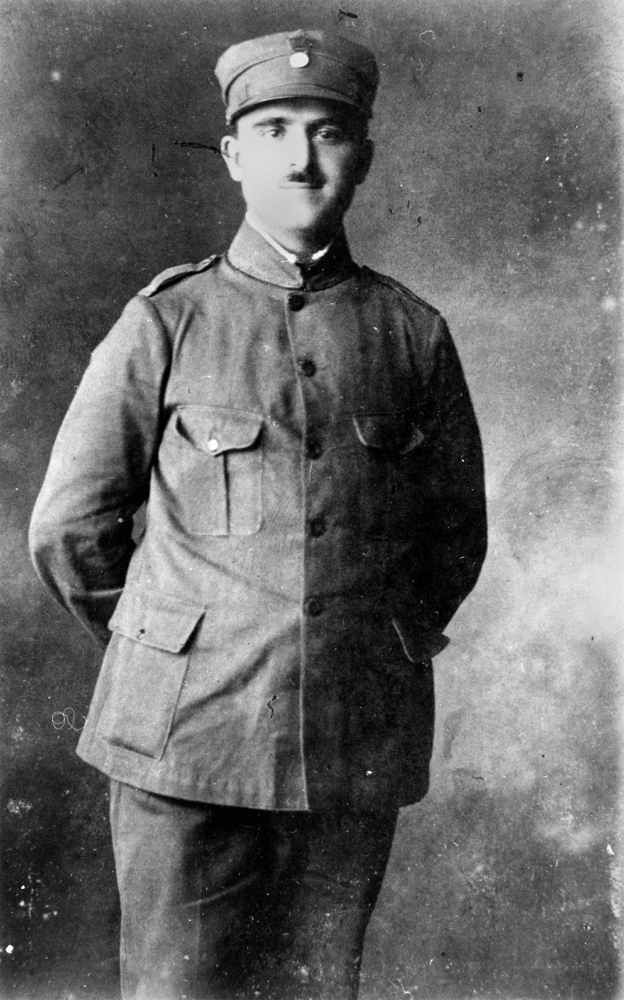
Christy Freeleagus, wearing the Greek army uniform, ca. 1922 - State Library of Queensland.
Directions
Immediately back across the road stands a monument consisting of a large cross draped in a number of strands of beads. These are regularly placed there by those who come to remember Dr Lilian Cooper.

Dr Lilian Cooper (8‑69‑13/14)
Lilian Violet Cooper was born on 11 August 1861 at Chatham, Kent, England. Her father, Henry was a captain in the Royal Marines who was married to Elizabeth. Lilian knew when she was young she wanted to be a doctor and began dedicating herself to medicine, entering the London School of Medicine for Women in 1886. After passing examinations at the Royal College of Physicians, Edinburgh, the Royal College of Surgeons, Edinburgh, and the Faculty of Physicians and Surgeons, Glasgow, she received a licence to practice in 1890.
Upon moving to Brisbane in May 1891, Cooper became the first female doctor registered in Queensland. She joined the Medical Society of Queensland in 1893 after two years of boycotting by her male counterparts for daring to leave a practice conducted by an alcoholic doctor. Later she became an Honorary in the Hospital for Sick Children and the Lady Lamington Hospital for Women. In 1905 she became associated with the Mater Hospital where she found her passion and so remained associated for the rest of her life.
During her life, Cooper always sought to further her knowledge, and during time spent in America, went on to earn a Doctorate of Medicine from the University of Durham. Joining the Scottish Women’s Hospitals in 1915 she performed 12 months of military service spending time in Macedonia where she was awarded the Serbian Order of St Sava, 4th Class.
Returning to Brisbane after the war she bought a house called Old St Mary's in Main Street, Kangaroo Point in 1926. Clearly skilled with her hands as a surgeon, Lilian was also known for conducting most of her own house and early motor vehicle repairs and maintenance. In this home she settled into in semi‑retirement, becoming a foundation fellow of the Royal Australasian College of Surgeons in 1928 before finally retiring in 1941.
Lilian died in her home on 18 August 1947. While she never married, her constant companion and friend, who first travelled with her from England, Miss Josephine Bedford ensured the home site was used for the development of the Mount Olivet Hospital of the Sisters of Charity. Part of this hospital has since been named the Lilian Cooper Nursing Home. Interestingly, a visit to St Mary's Church of England in Kangaroo Point will provide visitors with images of memorial windows and an altar at the front which displays embroidery of Dr Cooper's medal of St Sava.
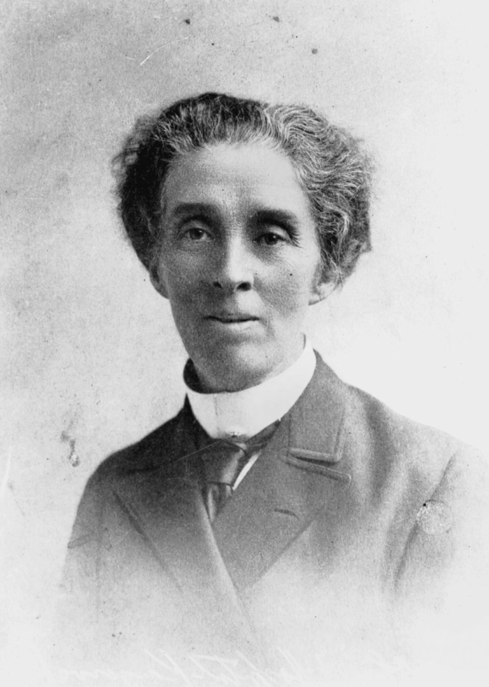 
Doctor Lilian Violet Cooper - State Library of Queensland.
Two friends seated in a horsedrawn buggy, Brisbane, ca. 1900. Miss Josephine Bedford (left) and Dr. Lilian Cooper - State Library of Queensland
Directions
Continuing further along the road, almost to the Richer Street entrance, immediately off the right is the white vaulted monument of Anthony Fatseas.
Anthony Fatseas (18‑191‑13E)
The grave of husband and wife, Anthony and Catherine Fatseas is highlighted during this walk for his burial in what looks like a small Greek Mausoleum, the same shape and colour of the chapels found in the Greek Islands. While it looks like a mausoleum, those buried here are underground rather than within the mausoleum walls.
Anthony Fatseas was born in Smyrna in Turkey in 1909. He finished elementary school in Turkey and moved to Athens, Greece with his parents and studied at the French School there. He completed his compulsory military service translating French and became an accountant, later moving to Egypt. He arrived in Australia in 1947 and worked for a year on the editorial staff of an ethnic newspaper and then worked in cafes and as a clerk. Finally, he became a partner in a delicatessen business.
Directions
From here continue along Dr Lilian Cooper Drive past the Richer Street entrance to where the trees are standing along the right side of the road. At the third tree locate the grave of Kramer. Heading along this row and slightly down the hill, three graves in, to the left is the grave of Frederic Charles Urqhart.
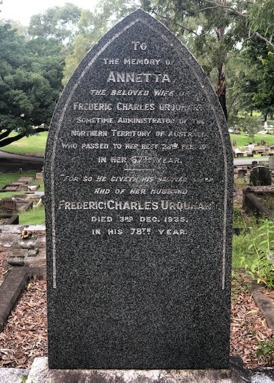
Frederic Charles Urquhart (25‑31‑8)
Frederic Charles Urquhart was reputedly an accomplished horseman who, after moving from England, joined the Queensland Native Mounted Police Force on 27 April 1882 as a cadet and installed as sub‑inspector in charge of the Gulf, Cape York and Torres Strait districts. He later transferred in 1889 to the general police. During his service he was known for his involvement in the search for survivors from the ill‑fated Quetta in Torres Strait in 1890 and the bush verse he wrote, which included Camp Canzonettes (1891) and Blood Stains (1919).
Transferred to Brisbane in 1896, Urquhart was promoted to Inspector, Second Class, and in 1898 took charge of the Criminal Investigation Branch. Unfortunately, during this service Urquhart became known not for his work but for his 'impulsive and exacting temperament' and his 'vindictive and tyrannical nature', which was highlighted during a Royal Commission into policing in 1889. Despite such criticism Urquhart remained supported by the current Police Commissioner and other political friends, to be appointed Chief Inspector on 1 July 1905. During this period of his service he rose to prominence in the police action during the 1912 general strike and despite some objections, was appointed Queensland's fourth Commissioner of Police on 1 January 1917, a position he held until 16 January 1921.
After this time, Urquhart moved and was appointed administrator of the Northern Territory and sent to Darwin to manage the North Australian Industrial Union. Upon his retirement in 1926, Urquhart settled at Clayfield, Brisbane with his family, passing away at St Helen's Private Hospital on 2 December 1935.
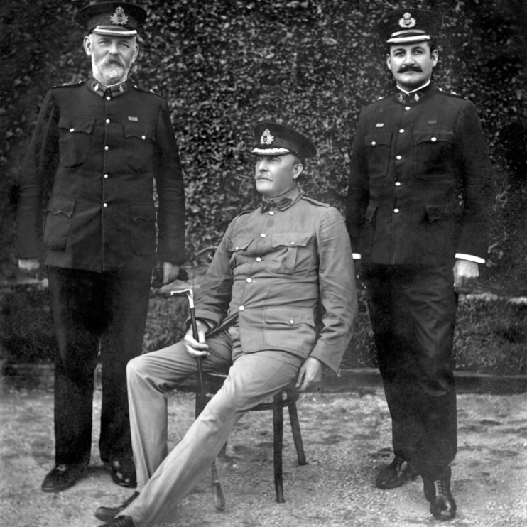
Queensland Police Force Commissioner and two officers, c 1905, Inspector 2/c Geraghty, Commissioner Cahill and Chief Inspector Urquhart at the Depot Ceremonial Arch; original photo believed to be taken ca. 1905 — Queensland State Archives
Directions
Coming back to the road and heading all the way to the top of the hill, on the very corner of the intersection with Pat Hill Drive is the grave displaying a boxing ring, the grave of Patrick Francis Hill.
Patrick Francis Hill (25‑49‑1)
The Boxing ring memorial of Pat Hill is a recognisable feature within Toowong Cemetery. At the time ‘Brisbaneites’ were known for their love of a good fight, and the Brisbane Stadium was considered the home of Brisbane’s wrestling and boxing for many years. Here men of different statures and builds were pitched against each other and the man in the middle was usually a referee by the name of Pat Hill. He was a balding slender framed, wiry man, who for more than 25 years danced in the ring alongside some of Australia’s best.
Pat died in August 1958, and following his death, the stadium organised a fundraiser to erect the memorial for Pat you see in the cemetery today.

Directions
retrace your steps and return to the Federation Pavilion.
Copyright and Attribution
The walk is based on Toowong Cemetery Tour Two © Brisbane City Council 2016, used under the Creative Commons Attribution 4.0 Licence.